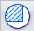
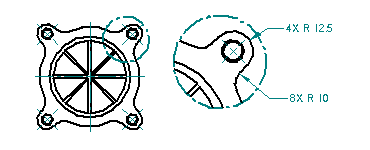
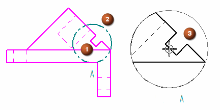
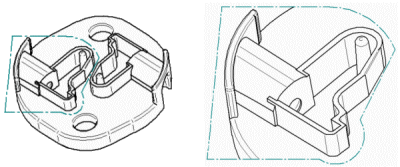
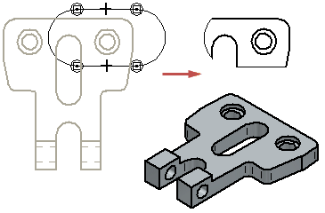

Detail views
You can use the Detail command

to create an enlarged view of a specific area of an existing drawing view. You can think of a detail view as a magnifying glass focused on a special area within a drawing view.
You can create a detail view with a circular shape or a detail view defined by a closed profile shape that you draw.
Creating a circular detail view
You define a circular detail view using the Circular Detail View option on the command bar. You can then specify the detail view envelope using three mouse clicks. The first click (1) defines the center of the circular area to enlarge on the source view, the second click (2) defines the diameter of the detail view circle, and the third click (3) places the detail view.

This example shows the new detail view in dynamic VHL preview mode. The Dynamic display option on the Drawing View Wizard tab (Solid Edge Options dialog box) controls the preview mode for new views. For more information, see Specifying a preview type for drawing views.
Creating a user-defined shape for a detail view
You can create a user-defined detail view using the Define Profile option on the command bar. You can then draw a profile the size and shape you want. Any closed profile can be a valid detail envelope.


Independent and independent detail views
-
Dependent detail views are tied to the source view from which they are created. To change shading, edge display, or other aspects of the dependent detail view, you must make the change in the source view and then update both views.
-
Independent detail views can have different display properties than the source drawing view. For example, you can show or hide parts, display hidden lines, add shading, or draw in the independent detail view without affecting the source drawing view.
-
Both dependent and independent views can be created from 3D geometry contained in principal views, auxiliary views, other detail views, section views, and broken out section views.
-
You can create a dependent detail view—but not an independent one—from a 2D Model view and from a drawing view that has been converted to 2D.
Converting dependent detail views
Once created, you can convert a dependent detail view to an independent detail view by selecting the view then selecting the Convert to Independent Detail View command on the shortcut menu. However, you cannot convert an independent detail view to a dependent view.
Detail view tooltip
If you pause the cursor over a detail view, a tooltip identifies the name of the source geometry file, the file type, and the view type. For example, the full tooltip for an independent detail view of a screw might display: High Quality View - Independent Detail View - AllenScrewM8.par. The tooltip text for a dependent detail view is simply High Quality View - Detail View - AllenScrewM8.par.
If you don't see these tooltips displayed on the drawing view, set the Show tool tips option on the Helpers tab of the Solid Edge Options dialog box.